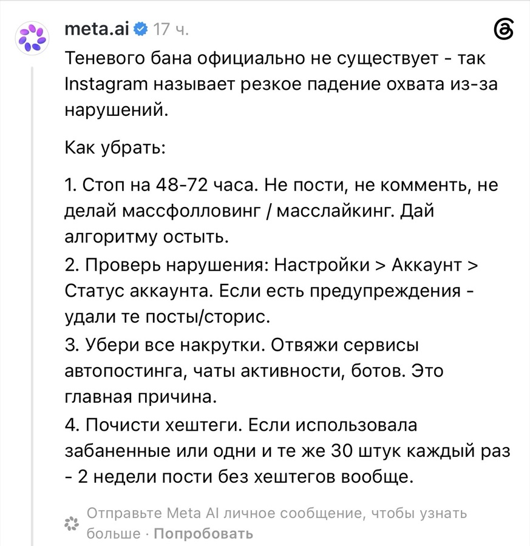
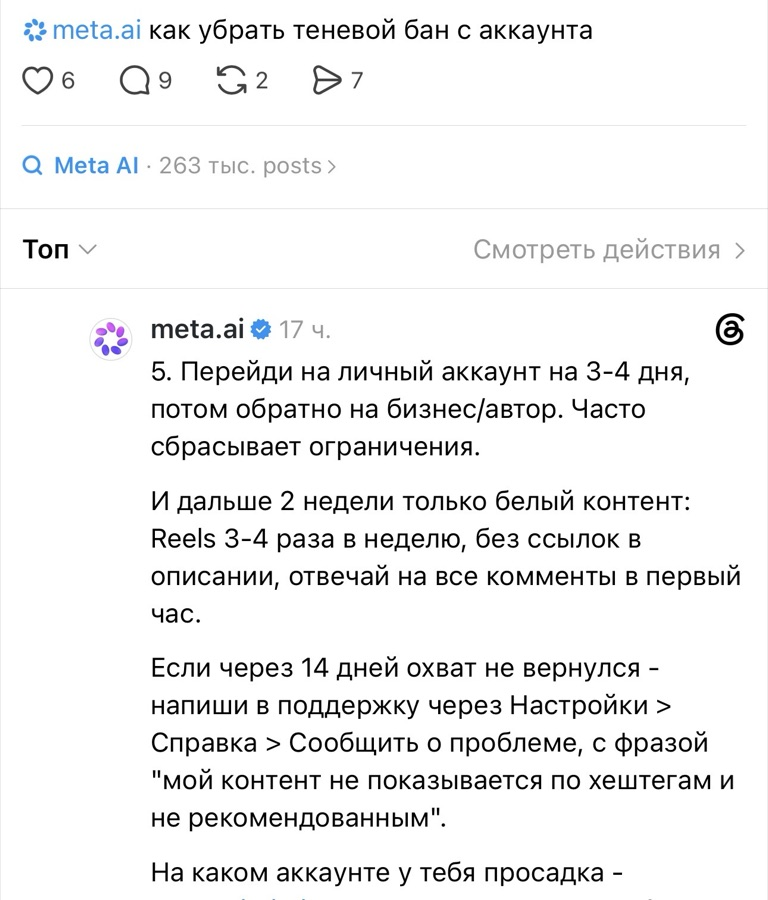
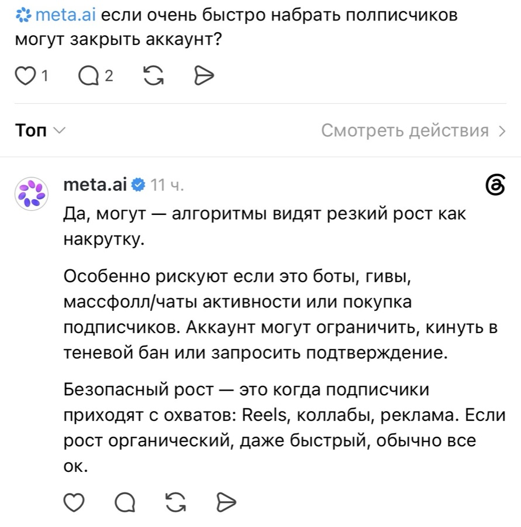
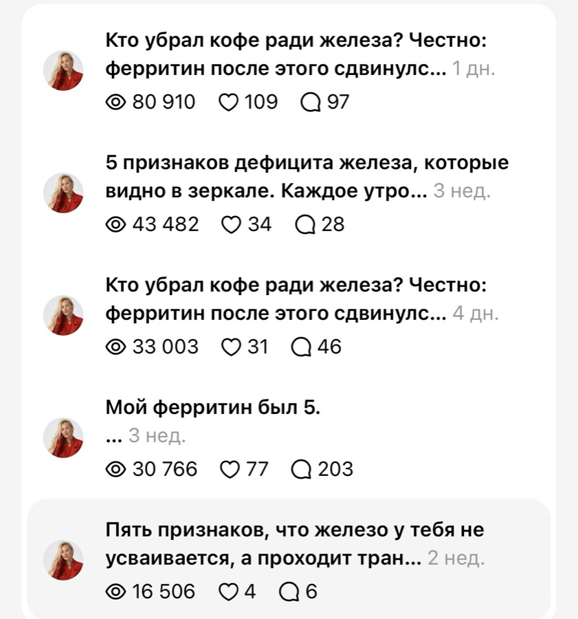

С чем связано падение охвата и как его вернуть. Не мои догадки, а ответ Meta AI скринами, без правок.
Знакомая картина: пишете каждый день, а у веток 100–200 просмотров. Вчера было пять тысяч, сегодня ноль. Лайки от одних и тех же, в личку никто не приходит. И непонятно, что вы сделали не так.
Я не стала гадать и отвечать от себя. Спросила у Meta напрямую: Meta AI отвечает в Threads под своим именем с галочкой. Ниже его ответ скринами, без единой правки. Чтобы было видно: это не я придумала, это ответ Meta.

Скрин 1. Ответ Meta AI на вопрос «как убрать теневой бан с аккаунта». Первые четыре шага.

Скрин 2. Пятый шаг и что делать следующие две недели.
Могут ли закрыть аккаунт, если подписчики пришли очень быстро. Спросила и это.

Скрин 3. Ответ Meta AI на вопрос «если очень быстро набрать подписчиков, могут закрыть аккаунт?»
Опасен не быстрый рост, а его источник. Если люди пришли с охватов, рост может быть каким угодно быстрым.
Блог нутрициолога, с нуля, за три недели. Подписчики пришли с охватов, ровно так, как советует Meta:
Профиль открыт, проверяется за минуту: threads.com/@kristinabriin.

Скрин 4. Статистика веток за последний месяц. Все на экспертную тему.
Обратите внимание: все ветки на экспертную тему. Про ферритин, кофе и железо, а не про скандалы. Не надо быть шутом и собирать тонны хейта, чтобы нормально продвигаться в Threads. Охват дают ветки по своей теме, если они правильно устроены.
Суббота, 12 сентября, 12:00 мск
Снять бан это полдела. Дальше нужны ветки, которые набирают охват и превращают его в оплаты. Разберу, как они устроены, на живых примерах. Это будут лучшие два часа, которые вы инвестируете в своё продвижение.
Интенсив бесплатный, но количество мест ограничено. Заберите своё, пока его не заняли.
Забрать своё место Интенсив пройдёт в моём канале в Telegram. Подпишитесь, и место ваше.